Primeros pasos con pyspark#
¿Por qué Spark?
Cuando los datos superan la capacidad de tu computador local, necesitas una solución distribuida. Spark permite procesar petabytes de datos de forma rápida y escalable.
Apache Spark es un sistema de procesamiento distribuido diseñado para trabajar con grandes volúmenes de datos, ideal para tareas de big data y machine learning. En lugar de procesar todo en un solo equipo, Spark divide las tareas entre varios dispositivos que colaboran entre sí.
Este marco es más rápido que tecnologías anteriores como Hadoop y ha sido adoptado por empresas como IBM, Amazon y Yahoo. Dominar Spark te permite escalar tus análisis y modelos predictivos, una habilidad clave en el perfil de cualquier científico de datos.
¿Qué es PySpark?#
PySpark es una interfaz para Apache Spark en Python. Con PySpark, puedes escribir comandos tipo Python y SQL para manipular y analizar datos en un entorno de procesamiento distribuido
{kind=link}
¿Para qué se utiliza PySpark?#
La mayoría de los científicos y analistas de datos están familiarizados con Python y lo utilizan para implementar flujos de trabajo de machine learning. PySpark les permite trabajar con un lenguaje familiar en conjuntos de datos distribuidos a gran escala.
Warning
⚠️ Atención!
Apache Spark también se puede utilizar con otros lenguajes de programación de ciencia de datos como R. Si te interesa profundizar más sobre esto te dejo el enlace donde puedes encontrar una hoja de trucos que les sirva de guía como instructivo para la instalación del sparklyr: https://rstudio.github.io/cheatsheets/sparklyr.pdf
¿Por qué aprender PySpark?#
Escalabilidad real: PySpark permite procesar terabytes o petabytes de datos, algo que bibliotecas como Pandas o Dask no pueden manejar eficientemente.
Sintaxis familiar: Si ya conoces Python, aprender PySpark es sencillo gracias a su API intuitiva y bien documentada.
Procesamiento distribuido: Está diseñado para trabajar sobre sistemas distribuidos, lo que lo hace indispensable en entornos empresariales basados en big data.
Velocidad y rendimiento: PySpark supera a Pandas, Dask e incluso Hadoop en velocidad, y permite procesamiento en tiempo real.
Tolerancia a fallos: Su arquitectura permite recuperar datos tras errores, lo que lo hace robusto para producción.
Computación en memoria: Utiliza RAM para acelerar el procesamiento, incluso en equipos sin disco duro o SSD.
Comunidad y confiabilidad: Aunque existen alternativas como PyFlink, Spark tiene mayor trayectoria y soporte comunitario, lo que lo hace más confiable para proyectos a largo plazo.
Funcionamiento de pyspark#
Arquitectura de funcionamiento:#
Antes de incursionar en la mecánica de pyspark es muy importante entender la arquitectura que lo soporta, las principales configuraciones que permite que este framework funcione.
{kind=link}
Escalamiento vertical: esta opción se da más en la modalidad de un servidor, se caracteriza por;
Mejorar los componentes de un único servidor añadiendo más recursos físicos como CPU (procesamiento), RAM (Memoria) o almacenamiento (HDD o SDD).
En algunas situaciones puede requerir una unidad de red si el servidor necesita comunicarse con otros sistemas, acceder a bases de datos remotas o manejar tráfico externo, pero no es el núcleo del escalamiento vertical.
{kind=link}
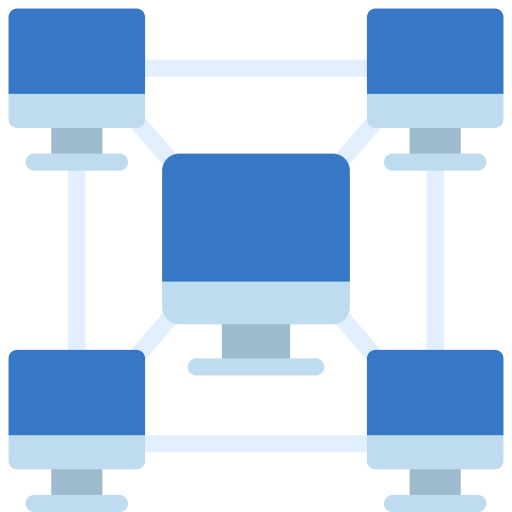
Escalamiento horizontal: este escalamiento es más «casero»
Es más sencillo de construir, puede utilizarse nodos o computadores de escritorio unidos por una red (router) y un dispositivo de almacenamiento centralizado (NAS).
Sí se requiere mayor procesamiento se pueden anexar a la red más computadores de escritorio.

Pc o Equipo local:
Un pc de escritorio o portail con varios nucleos de procesamiento (cores), memoria RAM, almacenamiento para lectura y escritura de datos (SSD o HDD)
Ecosistema de spark#
{kind=link}
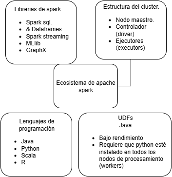
Elaboración propia
¿Qué es el ecosistema de Apache Spark?: Es un conjunto de herramientas que trabajan juntas para procesar grandes volúmenes de datos de forma rápida y eficiente. Aunque Spark se usa mucho en entornos técnicos, aquí te explico sus partes principales con ejemplos sencillos:
Spark SQL y DataFrames: Sirve para trabajar con datos organizados en forma de tablas, como si fueran hojas de cálculo. Ejemplo: Si tienes una lista de encuestas con nombres, edades y respuestas, Spark SQL te permite filtrar, ordenar o buscar información fácilmente.
Spark Streaming: Procesa datos en tiempo real, es decir, mientras se están generando. Ejemplo: Si estás monitoreando sensores de temperatura en diferentes regiones, Spark Streaming puede detectar cambios importantes al instante.
MLlib (Machine Learning Library): Es una biblioteca que permite crear modelos de predicción o clasificación. Ejemplo: Puedes entrenar un modelo para predecir si una persona responderá una encuesta completa según su edad y ubicación.
GraphX: Ayuda a analizar relaciones entre elementos, como si fueran redes o mapas de conexiones. Ejemplo: Si quieres entender cómo se conectan diferentes comunidades en una red social, GraphX te ayuda a visualizar y analizar esas relaciones.
Warning
⚠️ Atención!
Antes se usaba una técnica llamada RDDs para programar directamente en Spark, pero hoy en día se considera antigua. Las herramientas modernas como DataFrames y Datasets son más fáciles de usar y mucho más eficientes.
Estructura de un Clúster Spark#
¿Qué es un clúster?#
Un clúster es un grupo de computadoras que trabajan juntas como si fueran un solo equipo para procesar grandes cantidades de datos rápidamente. Spark organiza este equipo en roles específicos.
¿Quién hace qué en el clúster?#
Rol en el clúster |
¿Qué hace? |
Ejemplo cotidiano |
|---|---|---|
Nodo maestro |
Es el jefe del equipo. Reparte tareas y decide cómo usar los recursos. |
Como un coordinador que asigna funciones. |
Nodos ejecutores |
Son los ayudantes que hacen el trabajo pesado. Ejecutan las tareas. |
Como asistentes que completan las tareas. |
Controlador |
Es uno de los trabajadores que toma el rol de líder técnico del proyecto. |
Como un supervisor que traduce instrucciones y coordina acciones. |
¿Qué pasa cuando ejecutas tu código?#
El
Nodo Maestroelige un trabajador y lo convierte enControlador(driver).El Controlador:
Traduce tu código (por ejemplo, en Python) a un lenguaje que Spark entiende internamente (bytecode de JVM).
Solicita ayudantes (llamados
ejecutores) para realizar las tareas.Activa procesos en los nodos trabajadores para que empiecen a trabajar.
💡 Dato clave: Aunque escribas tu código en Python
PySpark, Spark lo convierte internamente a instrucciones en JavaJVMantes de ejecutarlo.
Ejecucción#
Cuando ejecutamos una aplicación Spark el Programa del controlador (Driver) crea un contexto, el SparkContext(), que es un punto de entrada a la aplicación. Todas las operaciones que se realizan (transformaciones y acciones) son ejecutadas en los nodos ejecutores Workers, y los recursos son administrados por el Administrador del Cluster.
{kind=link}
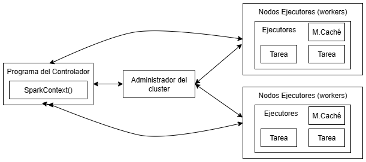
Elaboración propia
Programa del Controlador: proceso principal que ejecuta la función main() de la aplicación. Es el que crea el SparkContext.
Nodos Ejecutores: son todos aquellos nodos que dependen del backend y que se encargan de ejecutar los procesos de los Executors.
Executor: es un proceso iniciado para una aplicación en un nodo Worker. Este proceso ejecuta tareas y mantiene información en memoria (o en disco). Cada aplicación tiene sus propios Executors.
SparkContext: es el punto de entrada principal a la aplicación de Spark. Se puede usar para crear RDDs, acumuladores y variables de transmisión en el clúster.
Administrador del Cluster: el administrador de clúster es un servicio que permite la comunicación del Driver con el backend para adquirir y gestionar los recursos físicos en el clúster. Es el que determina el flujo de información entre los Workers y el SparkContext.
Local: esto en realidad no es un gestor de recursos pero había que mencionarlo, ya que podemos utilizar la opción «local» al declarar el nodo máster para indicar a Spark que será tu propio ordenador.
Configuración del controlador Driver
Es importante mencionar que la configuración del controlador funciona sobre la base del JVM y el Spark Ejemplo en Colab;
# EJECUTAR EN COLAB
!apt-get install openjdk-8-jdk-headless -qq > /dev/null # Instala Java 8 silenciosamente (requerido para Spark)
import os # Importa módulo para interactuar con el sistema operativo
os.environ["JAVA_HOME"] = "/usr/lib/jvm/java-8-openjdk-amd64" # Define variable de entorno con ruta de Java
!pip install pyspark # Instala la librería PySpark desde PyPI
import pyspark # Importa PySpark para usar Apache Spark en Python
from pyspark.sql import SparkSession # Importa la clase SparkSession del módulo pyspark.sql, que es el punto de entrada para trabajar con Spark
spark = SparkSession.builder \ # Crea una instancia de SparkSession usando el patrón builder (constructor)
.appName("MyColabApp") \ # Define el nombre de la aplicación Spark como "MyColabApp" (útil para identificarla en la UI de Spark)
.config("spark.driver.memory", "4g") \ # Asigna 4 gigabytes de memoria RAM al driver (proceso principal que coordina la ejecución)
.config("spark.executor.memory", "4g") \ # Asigna 4 gigabytes de memoria RAM a cada executor (procesos que ejecutan las tareas)
.config("spark.sql.adaptive.enabled", "true") \ # Habilita la ejecución adaptativa de consultas SQL para optimizar el rendimiento automáticamente
.config("spark.sql.adaptive.coalescePartitions.enabled", "true") \ # Permite que Spark combine particiones pequeñas automáticamente para mejorar el rendimiento
.getOrCreate() # Obtiene o crea la sesión de Spark (si ya existe una, la reutiliza; si no, crea una nueva)
sc = spark.sparkContext # Obtiene el SparkContext de la sesión (contexto de bajo nivel para operaciones RDD)
Explorando Spark más allá del código: la interfaz Web UI#
Una vez creada la sesión de Spark con SparkSession, no solo tenemos acceso a la API de PySpark para manipular datos, sino también a una poderosa herramienta visual: la Spark Web UI.
Esta interfaz web es como el “panel de control” de Spark. Nos permite observar en tiempo real cómo se ejecutan nuestras tareas, cuánta memoria se está utilizando, cuántas particiones se han creado, y cómo se distribuyen los trabajos entre los distintos ejecutores. Es especialmente útil para:
Monitorear el rendimiento de nuestras transformaciones y acciones.
Diagnosticar cuellos de botella o tareas que tardan más de lo esperado.
Comprender la arquitectura distribuida de Spark mediante visualizaciones de etapas y tareas.
Warning
⚠️ Atención!
En entornos como Colab, esta interfaz no está disponible directamente, ya que Spark se ejecuta en una máquina virtual sin acceso a puertos web. Sin embargo, si trabajas en tu máquina local o en un clúster real (por ejemplo, con Databricks, EMR o Spark en Kubernetes), puedes acceder a la Web UI desde tu navegador en la dirección: http://localhost:4040
Pestaña Jobs en la Web UI de Spark#
La pestaña Jobs en la interfaz web de Spark ofrece una vista general de todos los trabajos ejecutados por tu aplicación Spark. Es una herramienta clave para entender cómo se distribuyen y ejecutan las tareas en el clúster.
¿Qué muestra esta pestaña?
Una página resumen con información de alto nivel: estado, duración, progreso y línea de tiempo de eventos.
Una página de detalles para cada trabajo, con visualizaciones del DAG (grafo acíclico dirigido), etapas del trabajo y eventos asociados.
{kind=link}
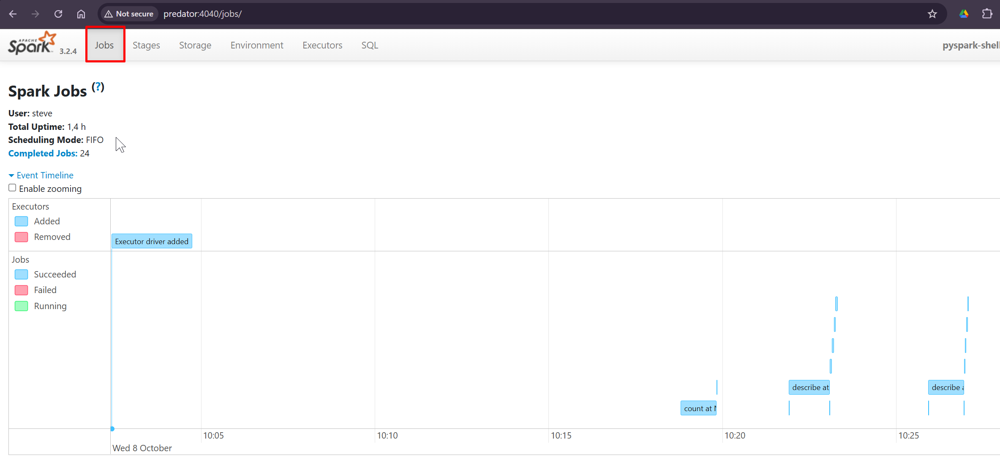
Elaboración propia
Linea de tiempo muestra cronologicamente el orden de los eventos relacionados con los ejecutores y los trabajos
Jobsque son un conjunto de tareas que procesan los ejecutoresworkers
¿Por qué es útil la pestaña de Jobs?
Identificar cuellos de botella o trabajos fallidos.
Visualizar cómo Spark divide las tareas en etapas.
Comprender el flujo de ejecución mediante el DAG.
Detalles de los trabajos agrupados por estado: Muestra información detallada de los trabajos, incluyendo ID del trabajo, descripción (con un enlace a la página detallada del trabajo), hora de envío, duración, resumen de etapas y barra de progreso de tareas.
{kind=link}
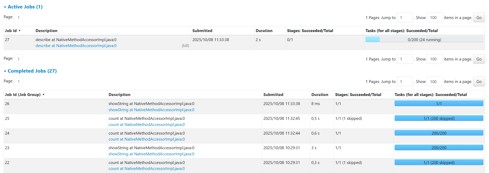
Elaboración propia
Cuando haces click en uno de los Jobs puedes ver su información en detalle
Detalles de Jobs
Muestra la información de un trabajo específico identificado por su ID, en este ejemplo es el 32.
Estado del trabajo: (en ejecución, exitoso, fallido)
Número de etapas por estado: (activas, pendientes, completadas, omitidas, fallidas)
Consulta SQL asociada: Enlace a la pestaña de SQL para este trabajo
Línea de tiempo de eventos: Muestra en orden cronológico los eventos relacionados con los ejecutores (agregados, eliminados) y las etapas del trabajo.
{kind=link}
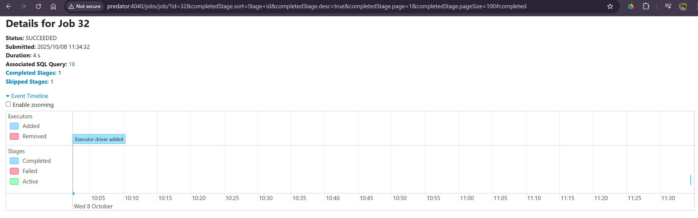
Elaboración propia
Visualización del DAG: Representación gráfica del grafo acíclico dirigido de este trabajo, donde los vértices representan los RDD o DataFrames y las aristas representan las operaciones a aplicar sobre los RDD.
{kind=link}
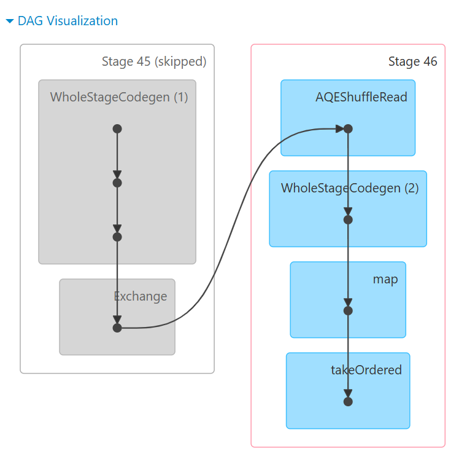
Elaboración propia
Análisis del DAG: Este DAG muestra una operación típica de agregación con shuffle en Spark. Aquí está lo que está sucediendo:
Stage 45 (Skipped - Gris):
WholeStageCodegen (1): Generación de código optimizado para la lectura inicial
Exchange: Operación de shuffle (redistribución de datos entre particiones)
Está “skipped” porque probablemente ya se ejecutó y los datos están en cache
Stage 46 (Activo - Azul):
AQEShuffleRead: Lectura adaptativa de los datos después del shuffle (Adaptive Query Execution)
WholeStageCodegen (2): Segunda fase de generación de código optimizado
map: Transformación de los datos
takeOrdered: Ordenamiento y toma de resultados finales
Pestaña Stage en la Web UI de Spark#
A continuación se explica cada componente de la tabla de etapas Stages (agrupadas por estado: activas, pendientes, completadas, omitidas y fallidas)
Stage ID-> ID de la etapa.Description of the stage-> Descripción de la etapa.Submitted timestamp-> Marca de tiempo de envío.Duration of the stage-> Duración de la etapa.Tasks progress bar-> Barra de progreso de tareas.Input: Bytes leídos del almacenamiento en esta etapa.Output: Bytes escritos en el almacenamiento en esta etapa.Shuffle read: Bytes y registros totales leídos, incluye tanto datos leídos localmente como datos leídos de ejecutores remotos.Shuffle write: Bytes y registros escritos en disco para ser leídos por un shuffle en una etapa futura.
{kind=link}
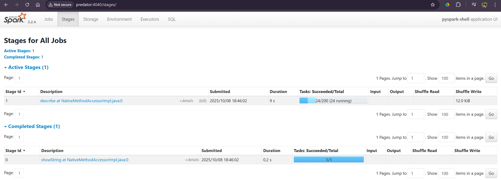
Elaboración propia
También se puede ver los detalle de cada Stage haciendo click en detalle, como se muestra en la siguiente imagen, ahí podras ver lo que ocurre en el JVM que es la capa de comunicación entre python y spark
{kind=link}
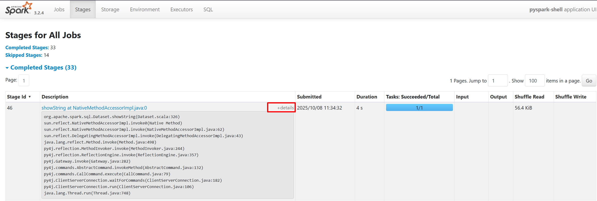
Elaboración propia
Este stage representa la fase final de materialización de la operación, donde:
Lee 56.4 KiB del shuffle anterior (datos ya agregados/procesados)
Procesa 1 sola tarea (porque solo necesita generar la salida final)
Dura 4 segundos (incluye formateo y envío al driver)
No escribe shuffle porque es el último paso antes de mostrar la tabla
Es tipico de operaciones como:
df.groupBy("categoria").count().orderBy("count").show(20)
↓
SHUFFLE WRITE (Stage 45)
↓
[Datos redistribuidos por red]
↓
SHUFFLE READ (Stage 46) → 56.4 KiB leídos
Sí ingresas haciendo click en el nombre de la descripción vas a obtener un gráfico DAG que va a mostrar detalles de la etapa:
{kind=link}
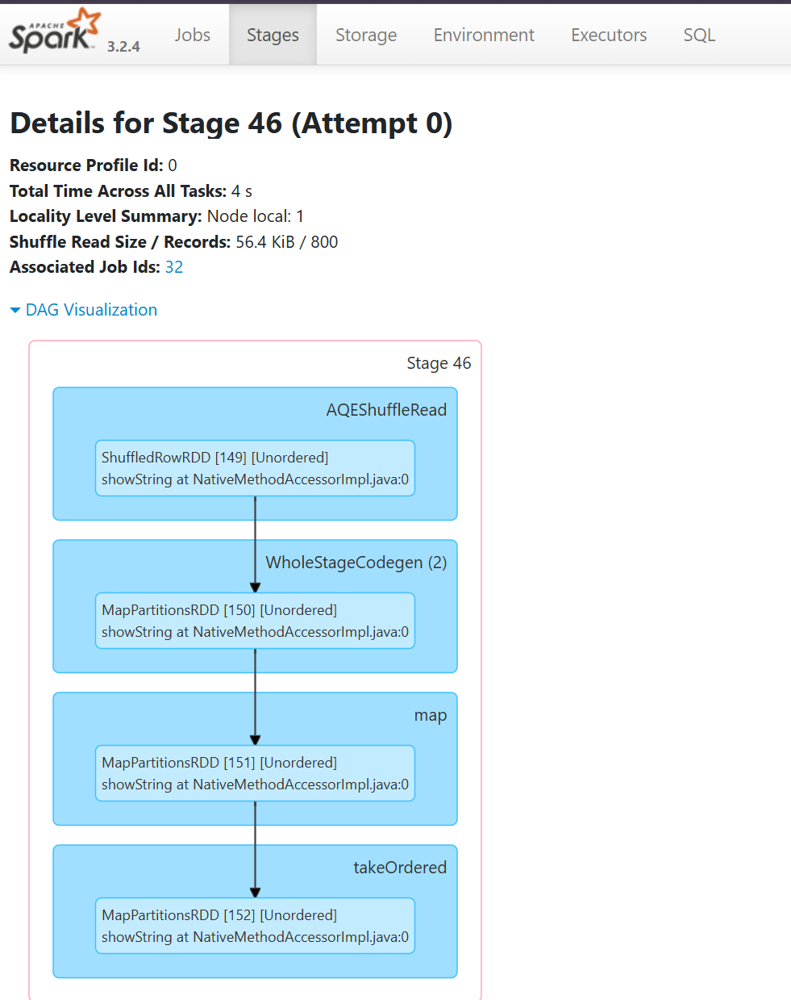
Elaboración propia
Análisis del DAG mostrado:
AQEShuffleRead
RDD:
ShuffledRowRDD [149]Etiqueta:
[Unordered](Lectura de shuffle no ordenada)Origen del código:
showString at NativeMethodAccessorImpl.java:0Significado: Esta es la operación de lectura de shuffle que probablemente utiliza Adaptive Query Execution (AQE) de Spark para optimizar la lectura de datos redistribuidos.
WholeStageCodegen
(2)
RDD:
MapPartitionsRDD [150]Etiqueta:
[Unordered]Origen del código:
showString at NativeMethodAccessorImpl.java:0Significado: Esta es una etapa completa de generación de código (optimización de Spark que compila múltiples operaciones en una sola función para mejor rendimiento). El “(2)” probablemente indica el ID de generación de código.
MapPartitionsRDD
[151]
Tipo: Operación de transformación sobre particiones
Etiqueta:
[Unordered]Significado: Aplica una función a cada partición del RDD anterior.
takeOrdered
RDD:
MapPartitionsRDD [152]Etiqueta:
[Unordered]Significado: Esta es la operación final que toma los elementos ordenados para mostrar el resultado.
Flujo de ejecución
El DAG representa una operación que:
Lee datos redistribuidos vía shuffle
Procesa los datos con optimizaciones de código
Transforma los datos mediante mapeo
Finalmente toma un número limitado de elementos ordenados
Pestaña Storage en la Web UI de Spark#
{kind=link}
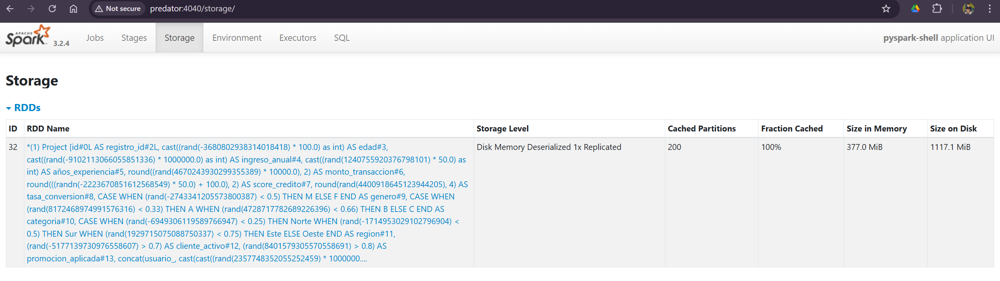
Elaboración propia
Métricas de Almacenamiento
La tabla muestra métricas típicas de Storage:
RDD Name: Describe la composición de la tabla, variables, esquema y formatos de las columnas.
Storage Level: (Disk Memory Deserialized 1x Replicated) lo que quiere decir que los datos están almacenados en Memoria RAM y en Disco, los datos no están centralizados y solo se hizo una copia de los datos.
Cached Partitions: (200) - número de particiones almacenadas.
Fraction Cached:
100.0%- TODAS las particiones están en caché.Size in Memory: (377MiB) - tamaño ocupado en memoria RAM.
Size on Disk: (1117.1MiB) - tamaño en disco.
Pestaña Environment en la Web UI de Spark#
La pestaña Environment de la interfaz web de Spark muestra la configuración activa del entorno en el que se está ejecutando tu aplicación. Es como abrir el panel de configuración de Spark para ver qué parámetros, versiones y rutas están en uso.
{kind=link}
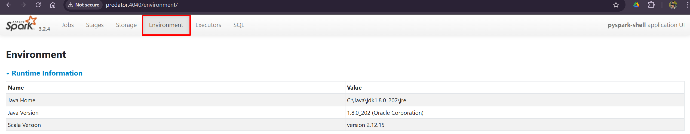
Elaboración propia
¿Qué información contiene?
Sección |
Descripción |
|---|---|
Runtime Information |
Versiones de Spark, Java, Scala y Hadoop utilizadas en la sesión actual. |
Spark Properties |
Propiedades de configuración activas, incluyendo las definidas en el código o en archivos externos. |
Hadoop Properties |
Parámetros relacionados con la integración de Spark con Hadoop (si aplica). |
Classpath Entries |
Rutas de acceso a librerías y recursos que Spark está utilizando. |
System Properties |
Variables del sistema Java ( |
Metrics Properties |
Configuración para la recopilación de métricas de rendimiento. |
Esta pestaña permite verificar configuraciones activas para diagnosticar problemas, replicar entornos y optimizar el rendimiento. Es clave para entender cómo Spark está configurado durante la ejecución.
Pestaña Executors en la Web UI de Spark#
{kind=link}
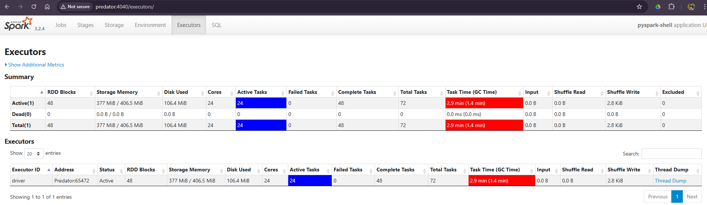
Elaboración propia
La pestaña Executors donde están los ejecutores en la Spark Web UI, proporciona un resumen detallado de cada executor creado para la aplicación. Un executor es un proceso que ejecuta tareas y almacena datos en memoria o disco durante el procesamiento distribuido.
¿Qué muestra esta pestaña?
Número total de executors activos e inactivos
Uso de memoria y disco por cada executor
Estadísticas de tareas ejecutadas (completadas, fallidas, en ejecución)
Información de shuffle (lecturas/escrituras entre nodos)
Estado del driver (si está incluido como executor)
Descripción de columnas
Columna |
Descripción |
|---|---|
Executor ID |
Identificador único del executor |
Address |
Dirección IP y puerto del executor |
RDD Blocks |
Número de bloques de datos almacenados en memoria |
Storage Memory |
Memoria usada y reservada para caching de datos |
Disk Used |
Espacio en disco utilizado por el executor |
Active Tasks |
Número de tareas actualmente en ejecución |
Failed Tasks |
Número de tareas que fallaron |
Completed Tasks |
Número de tareas completadas exitosamente |
Total Tasks |
Total de tareas asignadas al executor |
Shuffle Read/Write |
Datos leídos/escritos durante operaciones de shuffle |
Logs |
Enlaces a los registros de salida y error del executor |
Note
La columna Storage Memory es especialmente útil para identificar cuellos de botella en el caching de datos. Si un executor tiene poca memoria disponible, puede provocar recomputaciones costosas o uso excesivo de disco.
Pestaña SQL en la Web UI de Spark#
La pestaña SQL en la Spark Web UI muestra información detallada sobre las consultas SQL ejecutadas en la aplicación. Es especialmente útil cuando se trabaja con Spark SQL o DataFrames que internamente se traducen a operaciones SQL.
{kind=link}
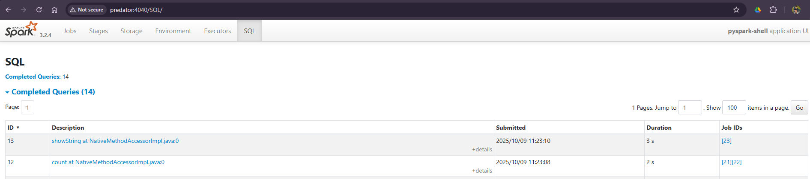
Elaboración propia
¿Qué muestra esta pestaña?
Lista de consultas SQL ejecutadas
Estado de ejecución (en progreso, completada, fallida)
Tiempo de inicio y duración de cada consulta
Plan lógico y físico de ejecución
Métricas de rendimiento como duración, número de filas procesadas, y uso de recursos
Descripción de columnas
Columna |
Descripción |
|---|---|
ID |
Identificador único de la consulta SQL |
Description |
Texto de la consulta SQL ejecutada |
Start Time |
Hora de inicio de la ejecución |
Duration |
Tiempo total que tomó ejecutar la consulta |
Status |
Estado actual (e.g., Running, Completed, Failed) |
Job IDs |
Identificadores de los jobs Spark asociados a la consulta |
Ejemplo visual si se esta trabajando con lenguaje SQL.
ID |
Description |
Duration |
Status |
Job IDs |
|---|---|---|---|---|
12 |
SELECT * FROM ventas |
3.2 s |
Completed |
[45] |
13 |
SELECT COUNT(*) FROM logs |
1.8 s |
Completed |
[46] |
Note
Si una consulta tarda demasiado, revisa el plan físico para detectar operaciones costosas como shuffles o scans sin filtros. También puedes verificar si hay broadcast joins mal dimensionados.
Monitoreo inteligente.#
Dominar PySpark no es solo escribir código que funciona, sino entender cómo y por qué funciona. El Spark Web UI es tu aliado estratégico para lograrlo: una herramienta visual que revela el comportamiento interno de tus aplicaciones, desde el uso de memoria hasta el rendimiento de cada consulta SQL.
Aprender a interpretar sus pestañas Jobs, Stages, Storage, SQL, Executors, te permite:
Detectar cuellos de botella en tiempo real
Optimizar el uso de recursos
Identificar tareas fallidas o mal distribuidas
Comprender cómo Spark transforma y ejecuta tus instrucciones
Note
Monitorear no es corregir después del error: es anticiparse. Un buen monitoreo permite tomar decisiones informadas antes de que los recursos se saturen o los tiempos de ejecución se disparen.